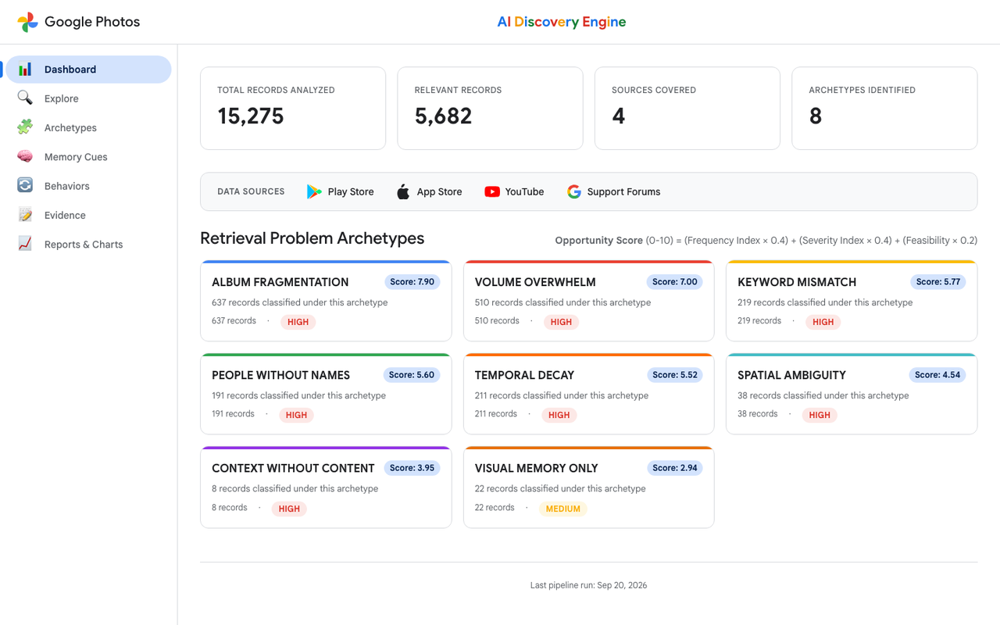
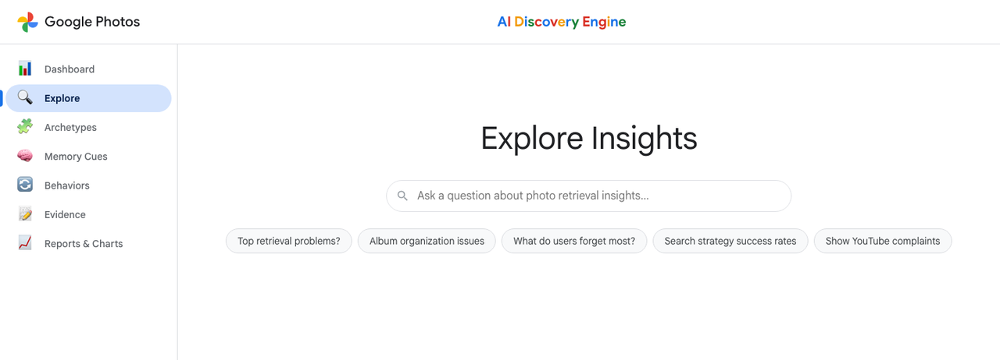
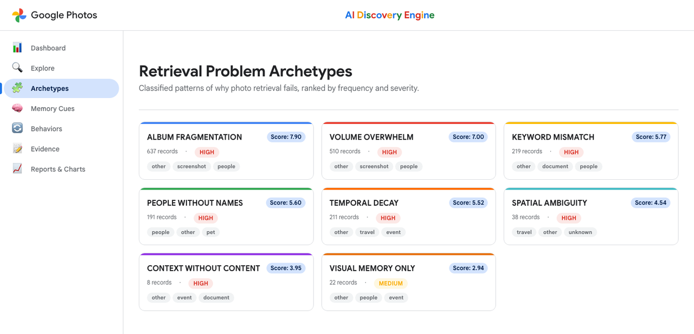
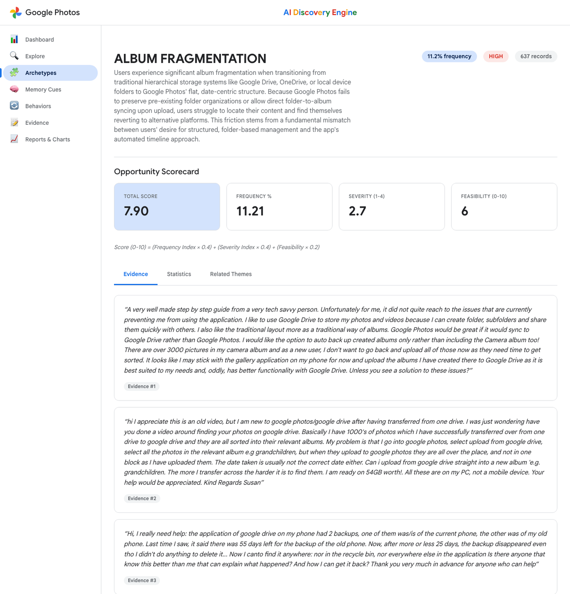
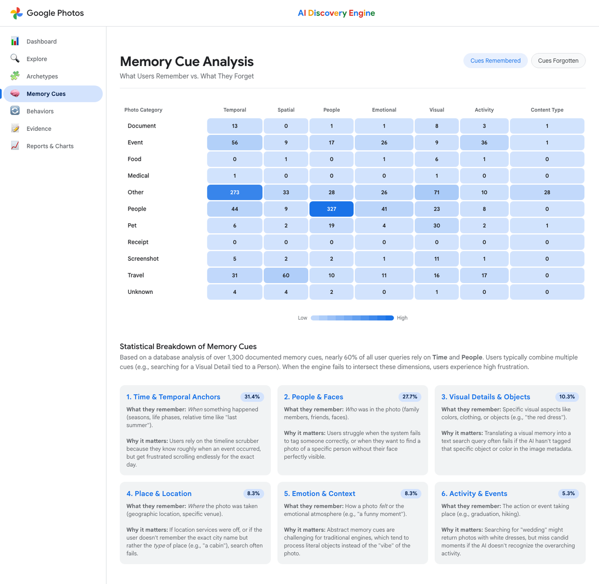
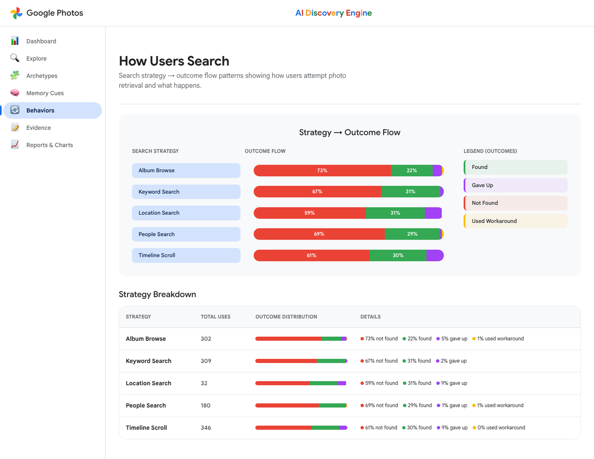
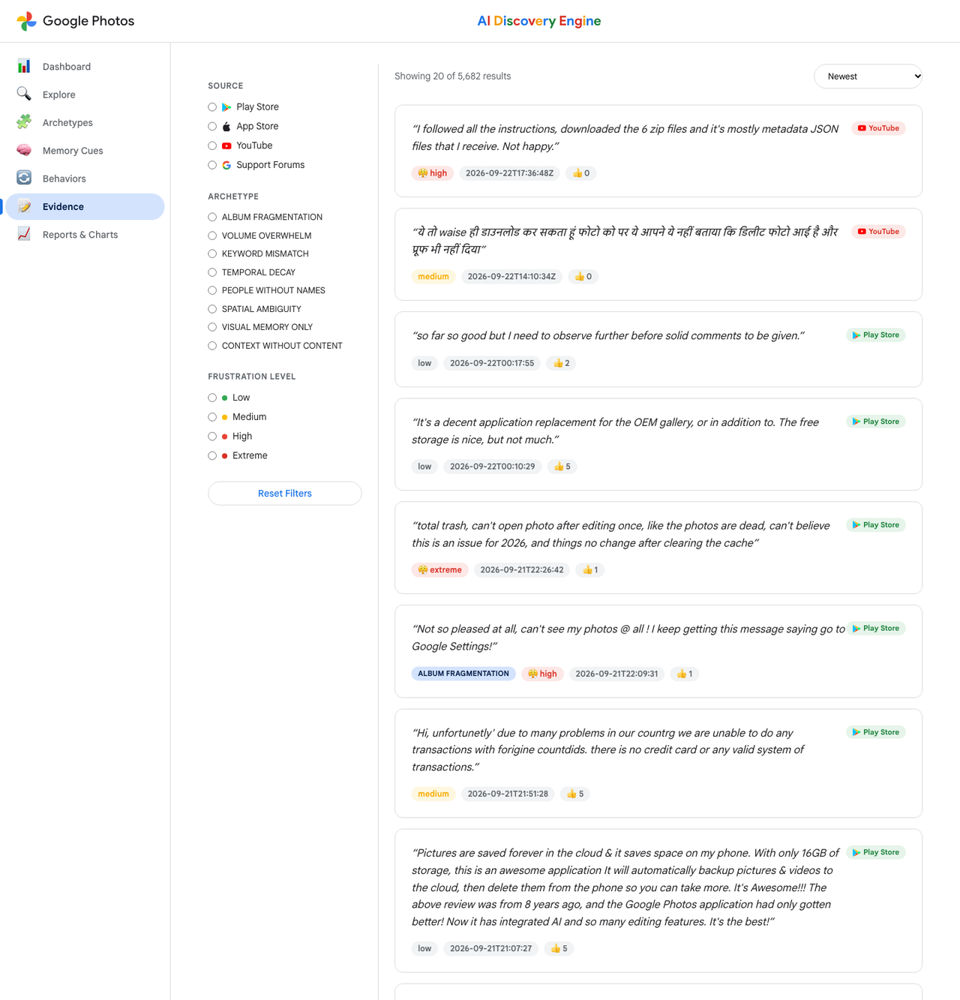
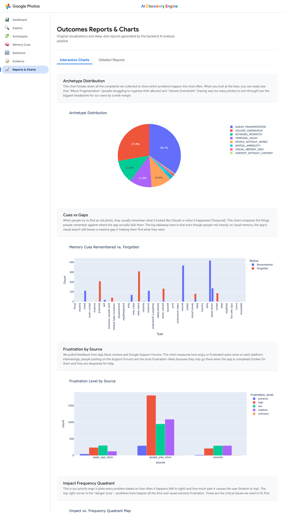

An end-to-end data pipeline that ingested 15,275 user reviews from Google Play, App Store & YouTube — surfacing why ~70% of users fail to find photos they know exist, ranked by opportunity score.
Raw user feedback flows through six sequential stages — each adding structure, signal, and evidence — ending in an interactive PM dashboard.
1,858 reviews scraped via google-play-scraper. Rating, text, date, version, thumbs-up count.
834 reviews via app-store-scraper. Rating, review text, version, and date captured.
880 comments via YouTube Data API v3. Text, likes, video title, topic context extracted.
Next.js 14 + Tailwind interface backed by a FastAPI server. Click any tab to preview each screen.

Top-level KPIs: 15,275 records, 5,682 relevant, 8 archetypes, 4 sources. Opportunity matrix heatmap, top archetypes ranked by score, and a sentiment ring chart.

Natural-language chat powered by Gemini + ChromaDB. Routes as SQL (counts/stats), Semantic (vector quotes), or Hybrid. Supports metadata filters like /filter source=play_store.

All 8 failure patterns ranked by opportunity score. Each card shows record count, frequency %, severity, and animated progress bars. Sortable and filterable.

Deep-dive: failure rate trend, verbatim quotes, emotion breakdown, source distribution, and PM-ready opportunity scoring breakdown (frequency × severity × gap × feasibility).

Cross-tab heatmap: photo content categories (travel, food, people…) vs. cue types (Temporal, Spatial, People, Visual, Emotional, Activity). Reveals which combos break most.

Clusters of user search behaviors — keyword trial, scroll-through, album navigate, give-up — with prevalence %, failure rate, and representative quotes.

Full-text search across 5,682 records. Filter by archetype, source, rating, and sentiment. Each result shows verbatim quote, star rating, source badge, archetype tag.

Downloadable JSON/Markdown reports: sentiment analysis, user journey map, opportunity matrix, factor importance scores, archetype distribution, example Q&A sessions.
Each archetype is a distinct, evidence-grounded pattern of how photo retrieval breaks down. Opportunity Score = Frequency × Severity × Expectation Gap × Feasibility.
| # | Archetype | Records | Freq % | Severity | Opp Score |
|---|---|---|---|---|---|
| 1 | Album Fragmentation | 637 | 11.21% | HIGH | 7.9 |
| 2 | Volume Overwhelm | 510 | 8.98% | HIGH | 7.0 |
| 3 | Keyword Mismatch | 219 | 3.85% | HIGH | 5.8 |
| 4 | People Without Names | 191 | 3.36% | HIGH | 5.6 |
| 5 | Temporal Decay | 211 | 3.71% | HIGH | 5.5 |
| 6 | Spatial Ambiguity | 38 | 0.67% | HIGH | 4.5 |
| 7 | Context Without Content | 8 | 0.14% | HIGH | 4.0 |
| 8 | Visual Memory Only | 22 | 0.39% | MED | 2.9 |
When users can't find a photo, they rely on one of 7 cognitive memory cue types. The engine maps each cue type against photo categories to reveal where retrieval breaks down most.
A composite journey map synthesised from 5,682 real user records, showing the exact stages where the experience collapses and the emotional state at each point.
A memory triggers the need — social occasion, medical event, travel memory. User opens Google Photos with confidence and certainty the photo exists.
😌 High confidenceUser tries keyword search ("beach café", "sick 2022") or scrolls the timeline. For ~70% of users this initial attempt fails — results too broad or irrelevant.
😕 First frictionUsers try alternative keywords, switch to albums (only to find them incomplete via fragmentation), or try date-range scrolling. Average: 3–5 retry attempts before abandoning.
😤 High frustration28% of Album Fragmentation sufferers report giving up entirely. 18% leave a negative review. Users lose trust in Google Photos as a reliable memory keeper.
😡 28% give upWhat users remember:
"That birthday party at the beach where she was wearing the blue dress."
What Google Photos needs:cake | sand | ocean | party | 2023-07-04
Increase the % of users who successfully retrieve a photo they remember but cannot precisely describe. Every archetype, cue, and behavior insight in this engine points toward that goal.
Ask any product question in natural language. The system routes it as SQL (structured counts), Semantic (ChromaDB vector search), or Hybrid. Try the interactive demo below.
TEMPORAL_DECAY, and a further 217 under KEYWORD_MISMATCH that overlap with date-forgetting scenarios.ALBUM_FRAGMENTATION accounts for 11.21% of total feedback (637 records). Primary frustration: inability to search across multiple albums simultaneously. Users find Google Photos forces them to remember exactly which album a photo was placed in.Structured questions about counts, percentages, rankings → hit SQLite directly for precise numeric answers.
Contextual questions → ChromaDB vector store for the most relevant verbatim user quotes.
Complex questions → SQL stats + ChromaDB quotes synthesised together by Gemini into a unified answer.
The Evidence Browser provides full-text search across all 5,682 analysed records. Below are real verbatim quotes, each tagged to an archetype and source.
Beyond archetype classification, the engine identifies distinct search behavior clusters — the actions users take when memory-driven retrieval fails.
Users try 3–8 different keyword combinations before giving up. Each failed attempt increases frustration and erodes trust. Most common behavior pattern observed.
Users manually scroll the chronological timeline. Works for recent photos, breaks completely for anything >6 months old with approximate date memory.
Users attempt to navigate album structures. Frequently fails due to Album Fragmentation — their intended folder structure was not preserved on upload.
Users try the Faces/People tab. Works only for tagged or frequently photographed individuals. Fails for unnamed or relationship-described contacts.
Users open the Map view hoping to find photos by area. Fails for vague spatial memory ("near the beach") vs. the precise GPS coordinates the system stores.
Final stage for ~28% of Album Fragmentation users. Users leave the app, often leaving a 1–2 star review or frustration comment as a last resort.
The pipeline produces 7 structured reports — all available in the Reports tab and as downloadable JSON/Markdown files.
A fully Python + TypeScript stack — no third-party data services — scraping, analysing, embedding, and serving everything end-to-end.
Every insight traces to a real user quote
Each layer independent — new sources slot in without refactoring
Designed for thousands of records across 5+ source types
Behavioural pattern extraction, not just polarity scoring
RAG layer enables ad-hoc PM questions against the evidence base